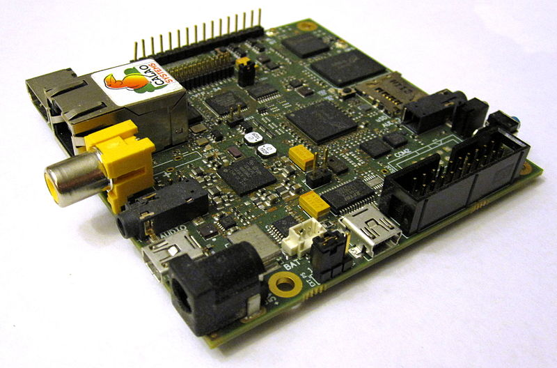
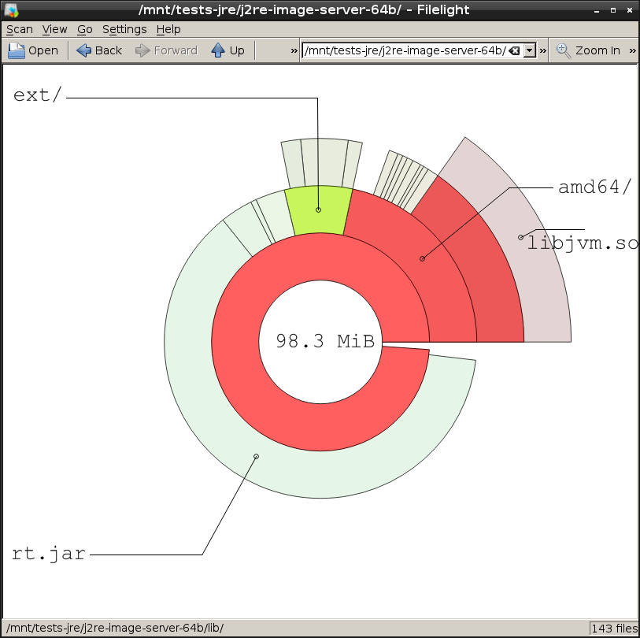
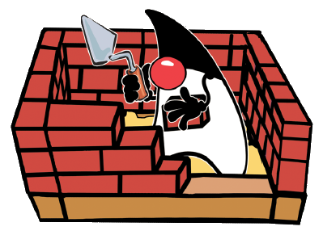
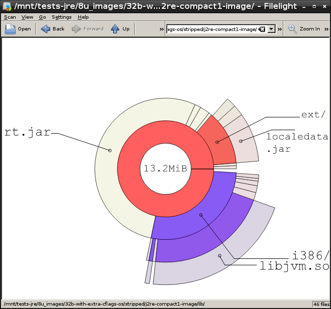
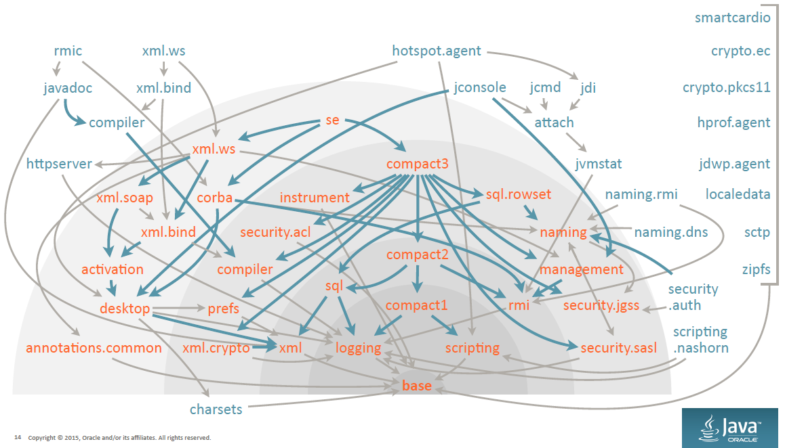

La modularisation avant l’heure : Compiler OpenJDK 8 en 10Mo
Thomas Lorblanchès
22/04/2016
|
OpenJDK ?

Minimisation : Pourquoi faire ?
 | Embarqué |
Sécurité | |
Cloud / VM / Conteneur / [insert your buzzword here] |
Pré-requis (Debian et dérivées)
Récupération des sources :
$ sudo apt-get install mercurial
$ hg clone http://hg.openjdk.java.net/jdk8u/jdk8u60
$ cd jdk8u60
$ bash ./get_source.shInstallation des dépendances de compilation :
$ sudo apt-get install openjdk8-jdk
$ sudo apt-get build-dep openjdk-8Organisation des sources (dépôt racine)
jdk8u60/
├── common/
├── make/
├── test/
├── ASSEMBLY_EXCEPTION
├── configure
├── get_source.sh
├── LICENSE
├── Makefile
├── README
├── README-builds.html
└── THIRD_PARTY_READMEOrganisation des sources ("forêt")
jdk8u60/
├── common/
├── corba/
├── hotspot/
├── jaxp/
├── jaxws/
├── jdk/
├── langtools/
├── make/
├── nashorn/
├── test/
├── ASSEMBLY_EXCEPTION
├── configure
├── get_source.sh
├── LICENSE
├── Makefile
├── README
├── README-builds.html
└── THIRD_PARTY_READMECompilation d’OpenJDK 8
Configuration de la compilation :
$ bash ./configure --with-jvm-variants=server \
--with-debug-level=release \
--disable-debug-symbols --disable-zip-debug-info \
--enable-unlimited-cryptoAide sur les options de configuration :
$ bash ./configure --helpCompilation :
$ make allEtat des lieux initial : 98.3Mo

Types de VM
Server : VM par défaut, meilleures perfos, plus grosse.
Client : VM 32bits optimisée pour les applications clientes (temps de démarrage).
Minimal : JEP-148, VM 32bits, empreinte minimale, dégradation perfo < 5%.
Zero : VM sans code assembleur, interpréteur seulement.
Zero-Shark : VM Zero avec compilateur JIT utilisant LLVM.
Kernel : Ancêtre de Minimal (Java 6), Windows seulement, non maintenue.
Core : Interpréteur seulement. Utilisé pour le "bootstrap" de la compilation pour le portage sur PowerPC/AIX.
Tailles et perfo des VM x86
| VM | Option de configuration--with-jvm-variants= | Taille libjvm.so | Score SPECjvm2008 |
|---|---|---|---|
Server 64b |
| 15.5Mo | 70.9 ops/m |
Server 32b |
| 13.5Mo | 62.9 ops/m |
Client 32b |
| 8.4Mo | 43.9 ops/m |
Minimal 32b |
| 5.8Mo | 40.4 ops/m |
Zero 32b |
| 7.0Mo | 1.4 ops/m |
Shark 32b |
| 19.8Mo | 16.8 ops/m |
Aparté : Projet "Mobile"
The goal of this Project is to focus on porting the JDK to popular mobile platforms such as iOS, Android, and Windows. — http://openjdk.java.net/projects/mobile/ |
JDK 9 based port
Support at minimum the equivalent of JDK 8 compact2 profile
iOS x64 and arm64 (arm64 will be provided via Zero interpreter)
Android x86 and arm (arm will be provided via Zero interpreter)
Tailles des VM
Make necessary modifications so that we can optionally build a small VM no larger than 3MB. (For reference, the client and server VMs are currently around 6 and 9MB, respectively.)
— JEP-148
Optimisations de libjvm.so
Edition des liens dynamique avec la lib C++ de l’OS :
--with-stdc++lib=dynamicGain : -102ko
Compilation optimisée pour la taille :
--with-extra-cflags=-OsGain : -1.8Mo sur libjvm.so (VM Minimal)
Stripping des binaires :
find . -exec strip --strip-unneeded {} \;Gain : -1Mo sur libjvm.so (VM Minimal)
Résumé de l’optimisation de la taille de libjvm.so
| VM | Taille libjvm.so par défaut | Taille "optimisée" |
|---|---|---|
Server 64bits | 15.5Mo | 8.8Mo |
Server 32bits | 13.5Mo | 7.1Mo |
Client 32bits | 8.4Mo | 4.1Mo |
Minimal 32bits | 5.8Mo | 2.8Mo |
Zero 32 bits | 7.0Mo | 3.4Mo |
Shark 32 bits | 19.8Mo | 14.5Mo |
Point sécurité
 | Utilisation des options de durcissement Debian |
--with-extra-cflags='-Os -D_FORTIFY_SOURCE=2
-fstack-protector-strong'
--with-extra-ldflags='-Xlinker -z -Xlinker relro'
Prix de la sécurité : +139ko (VM Minimal) sans impact perfo mesurable |  |
Et les ARM ?
ARMv8 (64 bits) :
Port AArch64 depuis mars 2014
Intégré au dépôt jdk9
ARMv6/7 (32 bits) :
Zero / Shark
Oracle Java SE Embedded 8 (licence propriétaire) : http://www.oracle.com/technetwork/java/embedded/embedded-se/
Optimisation de rt.jar
Profiles compacts
Compact profiles are sort of a poor man’s module system.
— Mark Reinhold

Génération des profiles compacts
$ make profiles| Type de JRE | Taille rt.jar |
|---|---|
JRE complet | 61.7Mo |
Compact 3 | 30.5Mo |
Compact 2 | 24.8Mo |
Compact 1 | 13.9Mo |
Compression de rt.jar
Par défaut, rt.jar n’est pas compressé ! |
$ zipinfo images/j2re-compact1-image/lib/rt.jar
[...]
4689 files, 13858994 bytes uncompressed, 13858994 bytes compressed: 0.0%Compression de rt.jar
Compiler avec |
$ zipinfo images/j2re-compact1-image/lib/rt.jar
[...]
4689 files, 13858994 bytes uncompressed, 6574887 bytes compressed: 52.6%Tailles rt.jar compressés
| Type de JRE | Sans compression | Avec compression |
|---|---|---|
JRE complet | 61.7Mo | 30.1Mo |
Compact 3 | 30.5Mo | 14.9Mo |
Compact 2 | 24.8Mo | 12.0Mo |
Compact 1 | 13.9Mo | 7.1Mo |
On en est où ?
VM Minimal avec profile compact 1 et compression.

On peut gratter encore un peu ?
lib/ext (1.6Mo) : packages optionnels
localedata.jar (1.1Mo) : données de localisation pour java.text et java.util (43 langues !)
sunec.jar (35ko) + lib/{arch}/libsunec.so (180ko) : crypto courbes elliptiques
sunjce_provider.jar (253ko) + lib/jce.jar (91ko) : Impl+API crypto (a)symétrique
sunpkcs11.jar (230ko) + lib/{arch}/libj2pkcs11.so (63ko) : PKCS#11 (crypto tokens)
lib/jsse.jar (303ko) : Java Secure Socket Extension (TLS/SSL)
Impact sur le code "utilisateur"
Analyse des dépendances avec jdeps
$ jdeps -v -profile hello-1.0-SNAPSHOT.jar
hello-1.0-SNAPSHOT.jar -> /usr/lib/jvm/java-8-openjdk-amd64/jre/lib/rt.jar (compact1)
Main -> java.lang.Object compact1
Main -> java.lang.String compact1Limiter les dépendances externes
Utiliser java.util.logging au lieu de logback / log4j
Utiliser javax.xml au lieu d’un parser externe
Supprimer les dépendances transitives optionnelles / non utilisées
Utiliser jdeps sur les dépendances externes
Et Java 9 ?
55 modules !

Figure 1. Modules Java 9 (source : Mark Reinhold, JFokus 2015)
Nouveaux outils
jdeps (depuis Java 8) : analyse des dépendances.
$ jdeps -profile helloworld.jar
helloworld.jar -> java.base (compact1)
test (helloworld.jar)
-> java.io compact1
-> java.lang compact1jlink (Java 9) : création d’images JVM sur mesure (cf. JEP-282).
Nouveau format JMOD